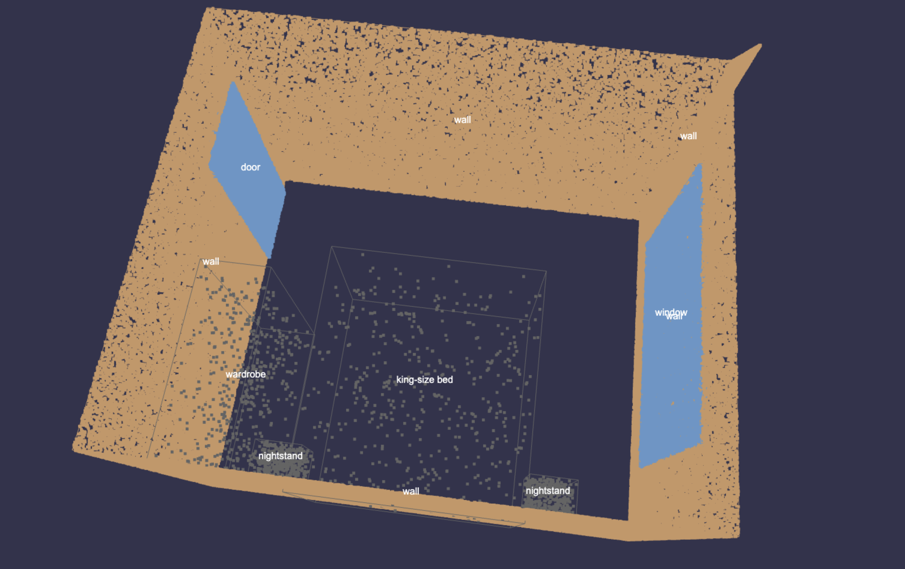
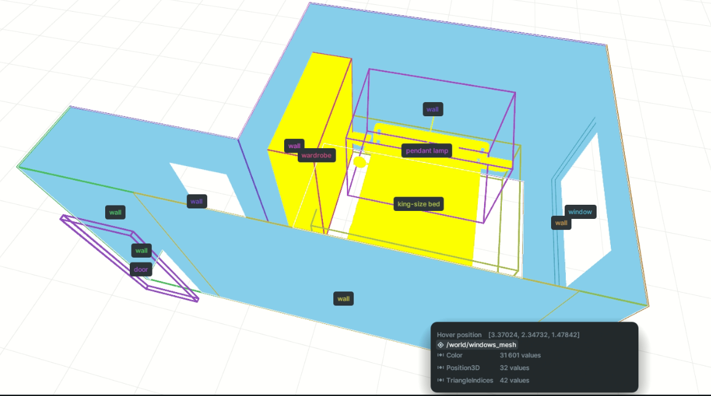
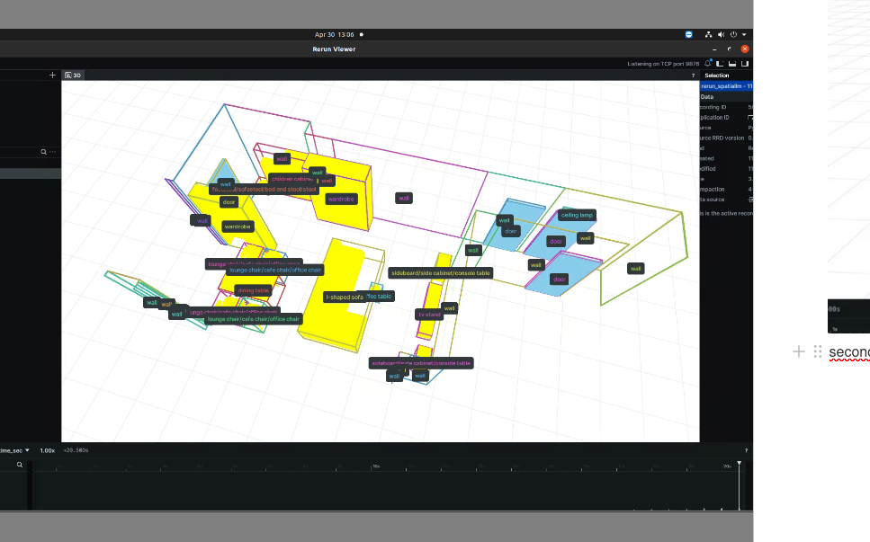

Teaching a language model where furniture should go
While working at Sceneverse with Pramish, he gave me a research idea to test.
The question was whether a language model could learn something about how objects are arranged inside a 3D room.
Given the type of room and the objects already present, could the model suggest reasonable positions for new objects?
For example, if a bedroom already had a bed, two wardrobes, a dressing table, doors, and windows, could the model suggest where another piece of furniture should be placed without putting it through a wall, blocking a door, or ignoring the rest of the room?
The model would not see the room as an image. It would receive a text representation of it.
Pramish pointed me toward datasets such as 3D-FRONT and 3D-FUTURE, along with a few papers and repositories that could help me understand possible approaches.
He asked me to try to get the experiment working in three days.
I took that deadline very seriously.
First, I had to understand the rooms
3D-FRONT contains furnished indoor scenes. 3D-FUTURE contains detailed 3D furniture models used in those scenes.
Together, they contain the information needed to understand a room: its walls, doors, windows, furniture, object positions, rotations, and dimensions.
But the data was not immediately usable for training.
I had to go through the dataset, understand how the scenes were represented, separate the different room types, extract the objects, calculate or retrieve their bounding boxes, and convert everything into one consistent structure.
One major preprocessing problem was that the data often came in a flat scene or house-level form, not as clean individual rooms. Doors and windows could be shared between rooms. But in the raw representation, a shared door or window might be mentioned under only one room. If I separated the rooms naively, the neighboring room would lose that opening entirely. I had to detect those mutual doors and windows and attach them to the other room too, so the room representation did not silently remove important geometry.
At first, I thought this would be the preparation before the actual work.
It became most of the work.
A script would process hundreds of scenes correctly and then fail on one scene that had some unusual structure. I would fix that case, run it again, and discover another assumption that did not hold.
Sometimes an object was missing information. Sometimes the coordinate representation behaved differently from what I expected. Sometimes a room contained something that my preprocessing code had not been written to handle.
Each time I thought the preprocessing was nearly finished, the dataset showed me another way it could break.
I started waking up at around three in the morning with possible solutions to some of these edge cases. I would think of a different way to normalize something, handle a malformed scene, or make the representation more consistent, and then get up to try it.
It was stressful because the three-day deadline had already started running in my head. But it was also one of the first times I had become so absorbed in a technical problem that I continued thinking about it even while trying to sleep.
Turning a 3D scene into text
Once the scenes were clean enough, I needed to represent them in a form a language model could read.
For each room, I converted the important spatial information into structured text.
The representation included things such as:
- The room type
- Walls
- Doors and windows
- Existing object categories
- Object positions
- Object rotations
- Bounding-box dimensions
A room was therefore described as a sequence of structured text entries rather than as an image or raw 3D file.
The exact format mattered a lot.
It had to contain enough information for the model to understand the current arrangement. But it also needed to remain regular enough that a generated answer could later be parsed by code.
The training task was roughly:
Here is the type of room and the current arrangement of objects. Suggest the positions and dimensions of additional objects that could be placed in the room.
The expected output used the same structured format, describing the new objects and their proposed bounding boxes.
I eventually generated roughly 6,000 examples for the experiment.
wall_0=Wall(1.9743586778640747,-6.613202476501465,0.026850323379039767,5.224358677864075,-6.613202476501465,0.026850323379039767,2.68,0.0)
wall_1=Wall(1.9743586778640747,-6.613202476501465,0.026850323379039767,1.9743586778640747,-1.7632024765014647,0.026850323379039767,2.68,0.0)
wall_2=Wall(5.224358677864075,-6.613202476501465,0.026850323379039767,5.224358677864075,-1.7632024765014647,0.026850323379039767,2.68,0.0)
wall_3=Wall(1.9743586778640747,-1.7632024765014647,0.026850323379039767,5.224358677864075,-1.7632024765014647,0.026850323379039767,2.68,0.0)
door_0=Door(wall_1,1.9743586778640747,-2.2632024765014647,1.0768503233790399,0.8800000000000001,2.08)
door_1=Door(wall_3,4.224358677864075,-1.7632024765014647,1.0768503233790399,0.8800000000000001,2.08)
window_0=Window(wall_0,3.5243586778640745,-6.613202476501465,1.4268503233790397,3.12,1.8800000000000001)
window_1=Window(wall_2,5.224358677864075,-6.013202476501465,1.4268503233790397,1.2400000000000002,1.8800000000000001)
bbox_0=Bbox(bed,4.174358677864075,-4.513202476501465,0.4268503233790398,-1.5708000000000002,1.84375,2.09375,0.84375)
bbox_1=Bbox(nightstand,5.0243586778640745,-3.2632024765014647,0.22685032337903976,-1.5708000000000002,0.46875,0.375,0.4375)
bbox_2=Bbox(dressing_table,4.874358677864075,-6.013202476501465,0.6268503233790398,-1.5708000000000002,1.1875,0.46875,1.1875)
bbox_3=Bbox(wardrobe,4.424358677864075,-2.663202476501465,1.2768503233790398,-3.1416,1.65625,0.46875,2.53125)
bbox_4=Bbox(wardrobe,1.9743586778640747,-4.513202476501465,1.2768503233790398,-1.5708000000000002,2.8125,0.3125,2.53125)Seeing the data in 3D
Reading rows of coordinates was not enough. I needed to check whether the data actually represented the room I thought it did.
So I set up scene visualization in Weights & Biases.
For the processed scenes, I exported both the point clouds and the object bounding boxes. This allowed me to open a scene inside W&B and inspect its spatial structure instead of relying only on the text representation.

I could see the room geometry, the objects, and the bounding boxes around them. If a preprocessing mistake placed an object in the wrong location or produced an incorrect box, it became much easier to notice visually.
This setup helped me verify several different parts of the pipeline:
- Whether the original scene had been parsed correctly
- Whether object positions and dimensions were preserved
- Whether the bounding boxes matched the furniture
- Whether the generated suggestions made spatial sense
- Whether an error came from the model or from preprocessing
It was satisfying to move between the same scene in different forms: first as raw 3D data, then as structured text, and finally as a point cloud and bounding boxes inside W&B.


Fine-tuning Llama
After preparing the data, I fine-tuned a Llama model on the generated examples.
This was my first time setting up the complete fine-tuning loop myself.
I had to prepare the training format, configure the run, send the data through the model, track the training, inspect the generated outputs, find problems, modify the setup, and run it again.
I used Weights & Biases for the training runs as well.
On one side, I could watch the training metrics and compare how different runs progressed. On the other, I could inspect the actual 3D scenes, their point clouds, and bounding boxes.
Watching the loss improve was exciting, but it was not enough to tell me whether the experiment was working.
A model could produce a lower loss and still generate output that my code could not use. It might omit one of the bounding-box values, change the structure, add an explanation in the middle, or suggest an object placement that looked unreasonable when placed inside the room.
So after each run, I had to look at both sides:
- What the training graphs were showing
- What the model was actually generating
That distinction became important. A machine-learning experiment can look promising in a chart and still fail when you try to use its output in the original system.
Putting the suggestions back into the room
The final step was to take the model’s generated text and turn it back into spatial data.
The model received the current room setup and generated suggestions for new objects. I parsed those suggestions, extracted the object categories, positions, rotations, and bounding-box dimensions, and mapped them back into the 3D scene.
The complete loop was:
Raw 3D scene
-> cleaned room and object data
-> structured text representation
-> training examples
-> Llama fine-tuning
-> suggested positions for new objects
-> parsed bounding boxes
-> visualization inside the 3D roomThe goal was not to build a finished interior-design system in ten days.
It was to test whether this research direction made sense at all.
Could a language model learn patterns from existing room layouts and generate new object-placement suggestions that could be converted back into a 3D environment?
The prototype worked well enough to show that the approach was worth studying further.
It was limited training, with a relatively small experimental dataset. It still needed better evaluation, more careful comparisons, stronger constraints, and much more training before it could become a full system.
But the complete loop worked.
I thought taking ten days was a failure
I did not finish the experiment in three days.
It took me ten.
Once the third day passed, every extra day felt terrible. I had accepted the deadline so fully that I felt slow each morning the work was still unfinished.
The preprocessing edge cases were taking longer than expected. Then the text format needed changes. Then I needed the output to remain parseable. Then the training completed, but the generated suggestions still needed to be inspected and visualized.
There always seemed to be one more part before I could call the loop complete.
When I finally showed Pramish the working result, I was disappointed that it had taken ten days.
He then told me that internally, they had estimated that it might take around thirty days.
That gave me some relief.
It also made the three-day deadline feel useful rather than unfair. Trying to finish in three days had forced me to move toward a working end-to-end version instead of spending weeks trying to understand every paper and every part of the dataset before building anything.
I missed the target I had in my head.
But I completed in ten days something they had thought could take thirty.
Prototype demo
The videos below are not the exact output of the fine-tuning pipeline. I built them later as prototypes on top of scenes to demonstrate the idea and make it easier to pitch: natural-language-driven changes to a 3D room, and a spatial agent that could understand a 3D scene through language.
What the experiment changed for me
After the first version worked, I continued reading.
I went through around ten more papers related to scene generation, spatial representation, language models, and object placement. The topic slowly stopped feeling like something I was only trying to understand from the outside.
I reached a point where I could compare different approaches, see the weaknesses in our experiment, and think about what a new research direction or paper might look like.
We did not turn this prototype into a complete research system. The experiment was mainly meant to test whether the approach had potential, and it did enough to validate that.
But it gave me something I needed at the time: confidence.
Before this, I had worked on machine-learning and 3D projects, but I was not sure whether I could own a research-heavy technical problem from beginning to end.
In this project, I had to understand raw 3D data, solve preprocessing failures, design a text representation, create the training samples, fine-tune the model, configure W&B, export point clouds and bounding boxes, observe the training, parse the generated suggestions, and place them back into a 3D scene.
I had worked through the entire loop myself.
I did not understand every part when I began. Most of the important parts were things I had to learn while building them.
That was what gave me confidence that I could become a technical builder.